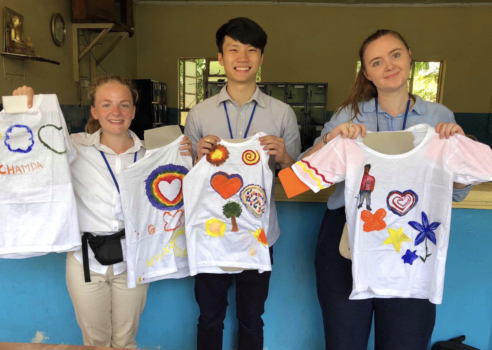
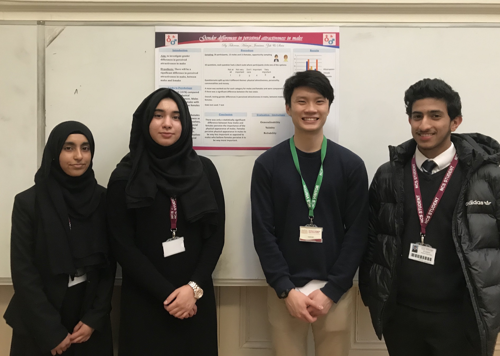
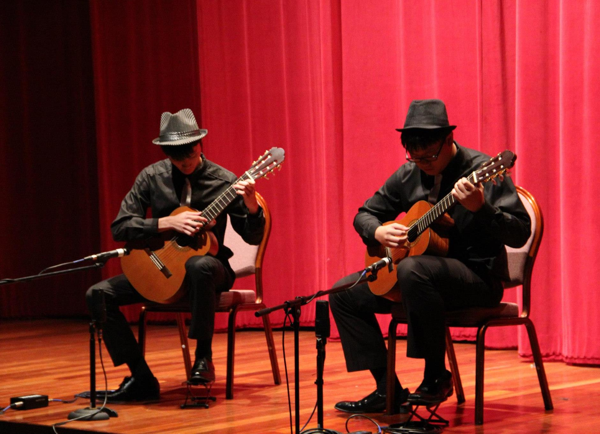
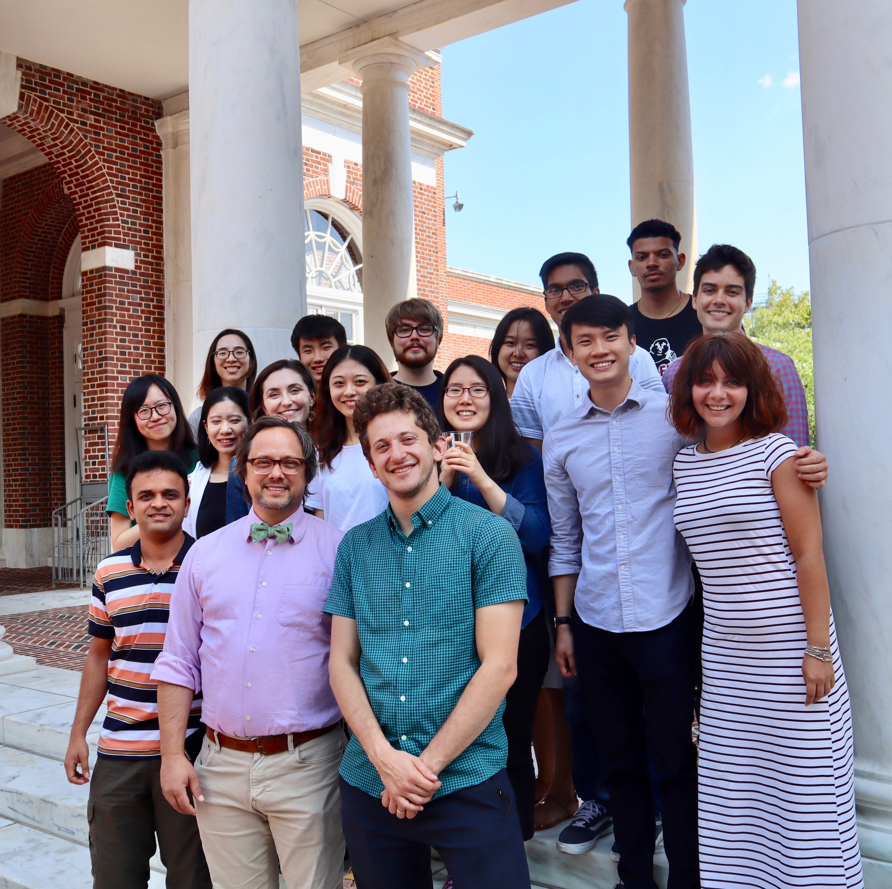

Art Therapy in the National Institute of Mental Health (Sri Lanka)

Research Project Poster Presentation (Newham Collegiate Sixth Form Centre)
I believe in giving back to the community. Since I have not been making any money as a student, I have been giving my time to help those in need.
While I was an undergraduate in London, I volunteered at the Phoenix Recovery Service at Mind in Camden which provided a support service for individuals with long-term mental health issues. As a Phoenix Recovery Worker, I facilitated a peer-support group for vulnerable individuals suffering from anxiety, helped service users accomplish their daily tasks and performed administrative duties to assist the running of the service. I also volunteered as an Academic Tutor at Newham Collegiate Sixth Form Centre, where I conducted A Level Psychology tutorials for a class of disadvantaged students. I was also the Outreach Director (2018/19) of the UCL Volunteering Society!
During the summer of 2018, I spent five weeks in Colombo, Sri Lanka, as a Mental Health Support Worker with SLV.Global. My main responsibility was to plan and conduct projects aimed at improving the physical and psychological well-being of service users, which included mental health patients at psychiatric hospitals as well as individuals with special needs such as autism, attention deficit hyperactivity disorder (ADHD) and Down's syndrome.
Before embarking on my undergraduate studies, I volunteered in Singapore as an Activity Support Worker at Stroke Support Station (S3), where I facilitated the running of art, cooking and mindfulness sessions for stroke survivors. I also volunteered with Muscular Dystrophy Association Singapore (MDAS) as a Power Soccer Coach, where I planned and conducted wheelchair soccer training for individuals with muscular dystrophy.
Music

Performance at VJC Guitar Ensemble Concert: Perfect Fifth
I have been playing the guitar since I was thirteen, and currently hold a Diploma in Classical Guitar Performance from the London College of Music (LCM). I also previously attained Grade 8 (Distinction) in Classical Guitar from LCM.
Back in 2013 and 2014, I worked part-time as a Classical Guitar Teacher at The Music Atelier, and was a Section Leader in the Victoria Junior College (VJC) Guitar Ensemble.
Apart from classical and acoustic guitar, I also play the piano!
Travel
I love travelling around the world to collect new experiences, learn about different cultures and get myself out of my comfort zone.
Some of my most memorable trips include interning as a Research Assistant at Johns Hopkins University in Baltimore, United States, volunteering in a Psychology Placement Programme in Colombo, Sri Lanka, participating in a Music Exchange Trip with VJC Guitar Ensemble in Kyushu, Japan, and taking a 3D2N hike up Mt. Rinjani in Lombok, Indonesia.
Since I'm currently studying in London, I am currently using this opportunity to travel around Europe as much as I can! (currently paused due to COVID-19 😢)

Vision Sciences Group, Johns Hopkins University (Baltimore, United States)Peak of Mt. Rinjani (Lombok, Indonesia)